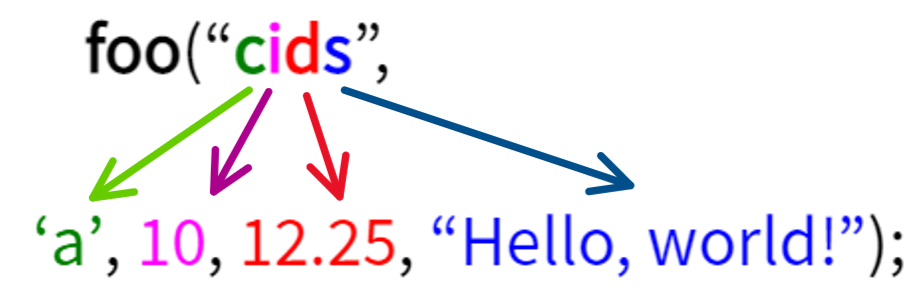

가변 인자
가변 인자 사용하기
- 함수에서 가변 인자를 정의
- 고정 매개변수가 한 개 이상
- 가변 인수 몇 개인지 지정해야함…
- 고정 매개변수 뒤 ' … '를 붙여 매개변수의 개수가 정해지지 않았다는 표시 해줌
- 주의! '…' 뒤에는 다른 매개변수를 지정할 수 없음
- 고정 매개변수가 한 개 이상
- foo(4, 10, 20, 30, 40); 사용
foo(int args, …)선언 이면
args = 4 들어가고 나머지 값들은 … 부분에 들어간다.
#include <stdio.h>
#include <stdarg.h>
void printNumbers(int dummy, int args, ...){
va_list ap; // 가변인자 담을 포인터
va_start(ap, args); // 포인터와 가변인자 갯수 지정
printf("<dummy: %d> ",dummy);
printf("Num of variables: %d [ ", args);
for(int i=0; i<args; i++) {
int num=va_arg(ap, int); // 포인터와 자료형크기를 넣어서 순방향 이동
printf("%d ", num);
}
va_end(ap); // 가변인자 포인터 NULL
printf("]\n");
}
int main(){
printNumbers(0, 1, 10);
printNumbers(0, 2, 10, 20);
printNumbers(0, 3, 10, 20, 30);
printNumbers(0, 4, 10, 20, 30, 40);
return 0;
}
- va_list: 가변 인자 목록 포인터
- va_start (포인터, 갯수): 가변 인자 포인터 설정
- va_arg (포인터, 자료형): 가변 인자 포인터에서 '자료형' 크기만큼 하나의 인덱스 데이터가져옴.
순방향 이동!!
- va_end (포인터): 가변 인자 처리 끝난 후, 지정한 포인터를 NULL로 만듬
자료형이 다른 가변 인자 함수
- 자료형이 다르면
switch文을 사용하자.
 - 고정 변수에, switch에서 case로 구분할 문자열 보냄
#include <stdio.h>
#include <stdarg.h> // va_list, va_start, va_arg, va_end가 정의된 헤더 파일
void printValues(char *types, ...) // 가변 인자의 자료형을 받음, ...로 가변 인자 설정
{
va_list ap; // 가변 인자 목록
int i = 0;
va_start(ap, types); // types 문자열에서 문자 개수를 구해서 가변 인자 포인터 설정
while (types[i] != '\0') // 가변 인자 자료형이 없을 때까지 반복
{
switch (types[i]) // 가변 인자 자료형으로 분기
{
case 'i': // int형일 때
printf("%d ", va_arg(ap, int)); // int 크기만큼 값을 가져옴
// ap를 int 크기만큼 순방향으로 이동
break;
case 'd': // double형일 때
printf("%f ", va_arg(ap, double)); // double 크기만큼 값을 가져옴
// ap를 double 크기만큼 순방향으로 이동
break;
case 'c': // char형 문자일 때
printf("%c ", va_arg(ap, int)); // char 크기만큼 값을 가져옴
// ap를 char 크기만큼 순방향으로 이동
break;
case 's': // char *형 문자열일 때
printf("%s ", va_arg(ap, char*)); // char * 크기만큼 값을 가져옴
// ap를 char * 크기만큼 순방향으로 이동
break;
default:
break;
}
i++;
}
va_end(ap); // 가변 인자 포인터를 NULL로 초기화
printf("\n"); // 줄바꿈
}
int main()
{
printValues("i", 10); // 정수
printValues("ci", 'a', 10); // 문자, 정수
printValues("dci", 1.234567, 'a', 10); // 실수, 문자, 정수
printValues("sicd", "Hello, world!", 10, 'a', 1.234567); // 문자열, 정수, 문자, 실수
return 0;
}
주의!!: gcc에서는!!
va_arg(ap, 자료형);
- char,bool -> int
- short -> int
- float -> double
vfprintf():3 사용하기
- switch는 너무 귀찮다면 vfprintf() 사용하자!